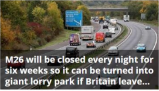

FOOD
provided by associated newspapers limited A Tory MP revealed work began on wednesday night to turn the M26 into a 'parking lot'.File photoA....
FOOD
all kinds of weight loss pills for oversized people are still yet to find a practical solution. most of...
FOOD
most of people dislike the old dried coconut jam but they prefer the riped ones. discover a new ways to make the best cocnut jams for the lunar new year with 3 flavours
M26 will be closed every night for 6 weeks so it can be turned into giant lorry park if britain leaves EU without a deal
provided by associated newspapers limited A Tory MP revealed work began on wednesday night to turn the M26 into a 'parking lot'.File photoA major mortorway in the south east will be closed every night
weightloss tea from japan
how to make jam with multiple flavours
- exotic restaurant with fried lizard and caramelized insects
- the new fluffy sweet peach mousse